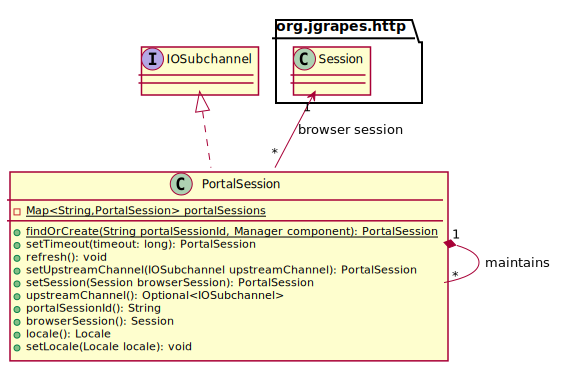

public final class PortalSession extends IOSubchannel.DefaultSubchannel
The server side representation of a window in the browser
that displays a portal page (a portal session). An instance
is created when a new portal window opens the websocket
connection to the server for the first time. If the
connection between the browser and the server is lost,
the portal code in the browser tries to establish a
new websocket connection to the same, already
existing PortalSession. The PortalSession
object is thus independent of the websocket connection
that handles the actual transfer of notifications.

Because there is no reliable way to be notified when a
window in a browser closes, PortalSessions are
discarded automatically unless refresh() is called
before the timeout occurs.
PortalSession implements the IOSubchannel
interface. This allows the instances to be used as channels
for exchanging portal session scoped events with the
Portal component. The upstream channel
(see upstreamChannel()) is the channel of the
WebSocket. It may be unavailable if the connection has
been interrupted and not (yet) re-established.
The response EventPipeline must be used to send
events (responses) to the portal session in the browser.
No other event pipeline may be used for this purpose, else
messages will interleave.
Because a portal session (channel) remains conceptually open
even if the connection to the browser is lost (until the
timeout occurs) Closed events from upstream are not
forwarded immediately. Rather, a Closed event is
fired on the channel when the timeout occurs. Method
isConnected() can be used to check the connection
state.
As a convenience, the PortalSession provides
direct access to the browser session, which can
usually only be obtained from the HTTP event or WebSocket
channel by looking for an association of type Session.
It also provides access to the Locale as maintained
by the browser session.
IOSubchannel.DefaultSubchannelChannel.Default| Modifier and Type | Method and Description |
|---|---|
Session |
browserSession() |
static Set<PortalSession> |
byPortal(Portal portal)
Return all sessions that belong to the given portal as a new
unmodifiable set.
|
void |
discard()
Discards this session.
|
Instant |
expiresAt()
Returns the time when this session will expire.
|
boolean |
isConnected()
Checks if a network connection with the browser exists.
|
boolean |
isStale()
Checks if the portal session has become stale (inactive).
|
Locale |
locale()
Return the portal session’s locale.
|
void |
refresh()
Resets the
PortalSession’s timeout. |
PortalSession |
setSession(Session browserSession)
Sets or updates associated browser session.
|
PortalSession |
setTimeout(long timeout)
Changes the timeout for this
PortalSession to the
given value. |
PortalSession |
setUpstreamChannel(IOSubchannel upstreamChannel)
Sets or updates the upstream channel.
|
String |
toString() |
IOSubchannel |
upstreamChannel() |
associated, byteBufferPool, charBufferPool, mainChannel, responsePipeline, setAssociated, setByteBufferPool, setCharBufferPoolclone, equals, finalize, getClass, hashCode, notify, notifyAll, wait, wait, waitcreate, defaultCriterion, isEligibleFor, respond, toStringcriterionToString, toString, toStringassociated, associated, associatedpublic static Set<PortalSession> byPortal(Portal portal)
Return all sessions that belong to the given portal as a new unmodifiable set.
portal - the portalpublic PortalSession setTimeout(long timeout)
Changes the timeout for this PortalSession to the
given value.
timeout - the timeout in milli secondspublic Instant expiresAt()
Returns the time when this session will expire.
public void refresh()
Resets the PortalSession’s timeout.
public void discard()
Discards this session.
public boolean isStale()
Checks if the portal session has become stale (inactive).
public boolean isConnected()
Checks if a network connection with the browser exists.
public PortalSession setUpstreamChannel(IOSubchannel upstreamChannel)
Sets or updates the upstream channel. This method should only
be invoked by the creator of the PortalSession, by default
the PortalWeblet.
upstreamChannel - the upstream channel (WebSocket connection)public PortalSession setSession(Session browserSession)
Sets or updates associated browser session. This method should only
be invoked by the creator of the PortalSession, by default
the PortalWeblet.
browserSession - the browser sessionpublic IOSubchannel upstreamChannel()
public Session browserSession()
public Locale locale()
Return the portal session’s locale. The locale is obtained from the browser session.
public String toString()
toString in class IOSubchannel.DefaultSubchannel